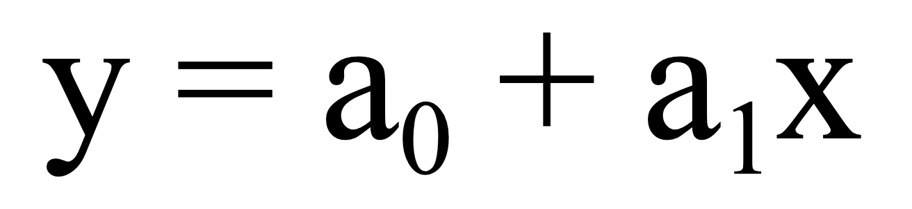
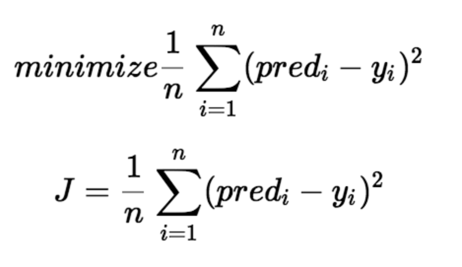
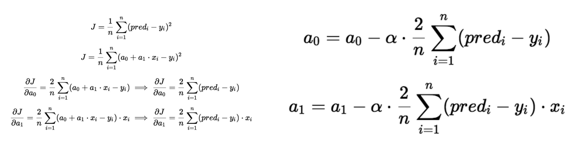

Linear Regression
Before knowing what is linear regression, let us get ourselves accustomed to regression. Regression is a method of modelling a target value based on independent predictors. This method is mostly used for forecasting and finding out cause and effect relationship between variables.

Simple linear regression is a type of regression analysis where the number of independent variables is one and there is a linear relationship between the independent(x) and dependent(y) variable. The red line in the above graph is referred to as the best fit straight line. Based on the given data points, we try to plot a line that models the points the best. The line can be modelled based on the linear equation shown below.
The motive of the linear regression algorithm is to find the best values for a_0 and a_1.
Before learning the linear regression algorithm, we have to first look at two important concepts. The cost function and gradient descent
Cost Function
The cost function helps us to figure out the best possible values for a_0 and a_1 which would provide the best fit line for the data points. Since we want the best values for a_0 and a_1, we convert this search problem into a minimization problem where we would like to minimize the error between the predicted value and the actual value.
There are different types of cost functions, each with its own advantages and disadvantages and uses in certain situations. But what we'll focus on is one of the simplest and most common function is the mean squared error (MSE) function which is the average of the square of the difference between the prediictioin and the actual value.
We choose the above function to minimize which is the difference between the predicted values and ground truth measures the error difference.
Gradient Descent
Gradient descent is a method of updating a_0 and a_1 to reduce the cost function(MSE). The idea is that we start with some values for a_0 and a_1 and then we change these values iteratively to reduce the cost. Gradient descent helps us on how to change the values.

To draw an analogy, imagine a pit in the shape of U and you are standing at the topmost point in the pit and your objective is to reach the bottom of the pit. There is a catch, you can only take a discrete number of steps to reach the bottom. If you decide to take one step at a time you would eventually reach the bottom of the pit but this would take a longer time. If you choose to take longer steps each time, you would reach sooner but, there is a chance that you could overshoot the bottom of the pit and not exactly at the bottom. In the gradient descent algorithm, the number of steps you take is the learning rate. This decides on how fast the algorithm converges to the minima.
Sometimes the cost function can be a non-convex function where you could settle at a local minima but for linear regression, it is always a convex function.

To update a_0 and a_1, we take gradients from the cost function. To find these gradients, we take partial derivatives with respect to a_0 and a_1. Now, to understand how the partial derivatives are found below you would require some calculus but if you don’t, it is alright. You can take it as it is
The partial derivates are the gradients and they are used to update the values of a_0 and a_1. Alpha is the learning rate which is a hyperparameter that you must specify. A smaller learning rate could get you closer to the minima but takes more time to reach the minima, a larger learning rate converges sooner but there is a chance that you could overshoot the minima.